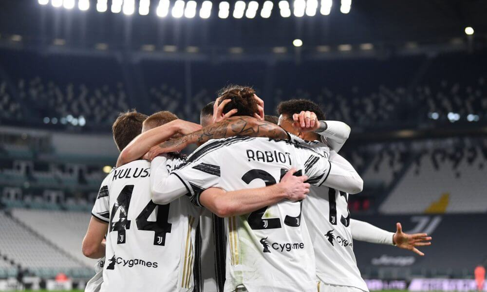

Serie A
Conocida por motivos de patrocinio como Serie A TIM— es la máxima categoría del sistema de ligas de Italia y la principal competición a nivel de clubes del país. La organiza desde 1946 la Lega Nazionale Professionisti (LNP) tras suceder a la Federación Italiana de Fútbol (FIGC) y convertirse en 2010 en la Lega Nazionale Professionisti Serie A (LNPA). Comenzó a disputarse en 1929 y desde entonces se viene celebrando sin interrupciones, con la excepción del período entre 1943 y 1945 por la Segunda Guerra Mundial.2n. 2 La competición es sucesora de los Campeonatos Italianos nacionales surgidos en 1898, disputados hasta 1929, en que se crea el vigente formato unificado.n. 3 Está formada por veinte clubes, que disputan un total de 380 partidos (38 cada club), en cada temporada que se extiende entre los meses de agosto y mayo. Los tres últimos clasificados al final del campeonato, descienden a la Serie B. A lo largo de su historia, doce clubes se han proclamado campeones, en un palmarés liderado por la Juventus F. C. con 34 títulos, seguida por los dos grandes clubes de Milán, F. C. Internazionale, y A. C. Milan, con 19 y 18 títulos respectivamente. La Juventus, que logró enlazar nueve «Scudetti» consecutivos entre 2012 y 2020, es el único club que ha ganado todas las competiciones posibles a nivel continental, junto al título de campeón mundial.34 El Milan es uno de los cinco clubes con más títulos internacionales y el segundo con más títulos de campeón continental (7),5 mientras que el Internazionale es el primer y único club italiano que ha conseguido el «Triplete». El enfrentamiento entre juventinos e interistas se conoce como el «Derby d'Italia»,6 mientras que el disputado entre los dos clubes milaneses, es el «Derby della Madonnina». Junto a los tres grandes clubes del norte del país, destacan los tres grandes clubes meriodinales: los dos clubes capitalinos, A. S. Roma y S. S. Lazio, junto a la S. S. C. Napoli.7